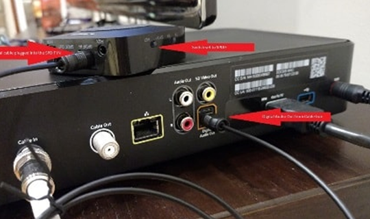

DIGITAL OPTICAL CONNECT
Related review for reference please click:
https://www.amazon.com/gp/customer-reviews/R1UV602U63FYHN/ref=cm_cr_dp_d_rvw_ttl?ie=UTF8&ASIN=B01KO1JNCAUse the Optical Cable to connect the TT-BA09 in TV:
Switch to the “TX mode” and "SPDIF" before power the TT-BA09 --> Pair the TT-BA09 with your Headphone/Speaker --> Plug the Optical Cable into the TV "Digital Optical Output Jack” --> plug intothe "SPDIF IN" of the TT-BA09.
NETFLIX AND NO SOUND FROM TV
Related review for reference please click:
https://www.amazon.com/gp/customer-reviews/R1UV602U63FYHN/ref=cm_cr_dp_d_rvw_ttl?ie=UTF8&ASIN=B01KO1JNCAIf you used the Netflix and Amazon video on your TV but there is no sound, please make sure that the TV's digital optical output is PCM. Although it is not stated in the User's Guide, the TT-BA09 apparently decodes only PCM from the Digital Optical input. You mayhave to go into your TV's settings to make sure that Digital Optical audio output is PCM and not Dolby Digital or DTS.
Digital Sound Out set at Auto equals no sound on Apps, set at PCM sound is crystal clear on everything.